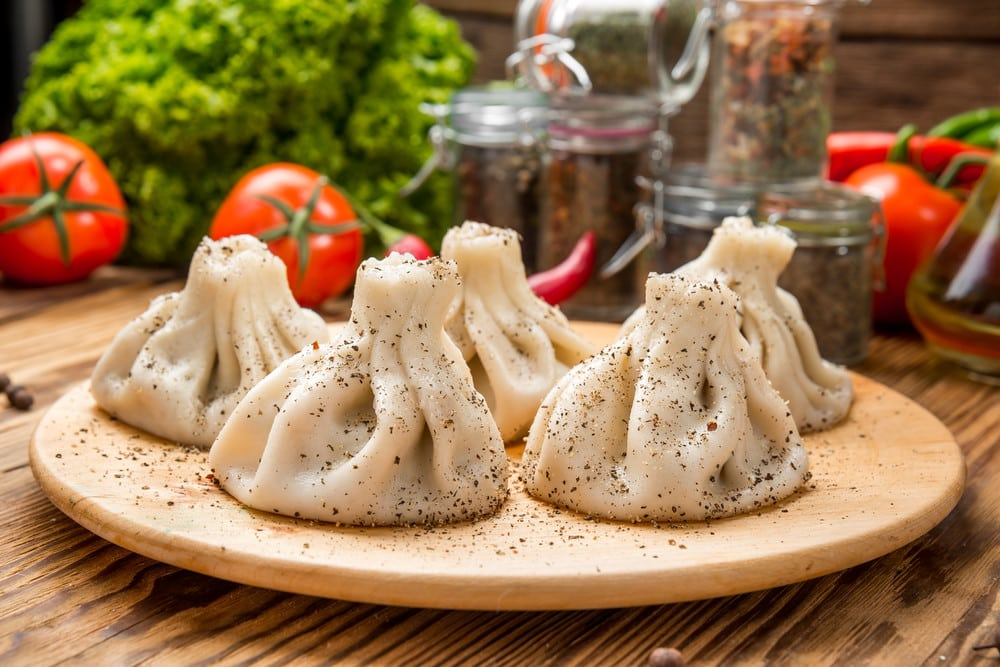

Khinkali Recipe

What is Khinkali
Khinakli is traditional Georgian dish. It is a variation of asian dumplings but a bit more complicated.
There are different types of Khinaklis made in Georgia but "mountain type" and "city type" Khinaklis are
two most common ones.
The most important ingredient for preparation of Khinkali is meat. Nowadays beef is a usual meat of choice,
but traditional Khinakli is made from sheep meat.
Ingredients
- Dough - 1,5 kg
- Eggs - 2
- Water - 450 mg
- Ground Beef - 700 g
- Salt - 1 spoon
- Small onions - 2 pieces
- Dried red pepper - 1,5 spoons
Steps for preparation
- Add 1,1 kg of flour to a mixing bowl.
- Add 2 eggs to a flour in the bowl.
- Add 450 mg of warm water.
- Mix ingredients in the bowl well.
- Form a ball from the dough.
- Continue kneading and folding until the dough is very firm.
- Cut out circles of about 2.5 inches in diameter with a drinking glass.
- Use a rolling pin to roll each circle into a thin eight inch round. These rounds will be filled with a meat and spice mixture to make khinkali.
- Add the meat, spices, 2 finely chopped onions and salt to a mixing bowl.
- Mix the ingredients by hand and then add 25 ml of water and squash and squash the mixture. Repeat this process 20 times until you have mixed at least 500 ml of water with the meat. This will ensure that your khinkali have lots of juice.
- Take one round of dough from your pile of rounds.
- Add 1 heaped tbs of the meat mixture to the center of the round.
- Use your thumbs and index fingers to make an accordion type fold all around the outside.
- Put each khinkali on a board or work surface that has been dusted with flour.
- Carefully place the dumplings into a deep pan of boiling salty water, about 10-15 at a time.
- Boil for 12 to 14 minutes. If the dough has been made properly the dumplings will not burst.
- Remove them from the water and serve them hot.